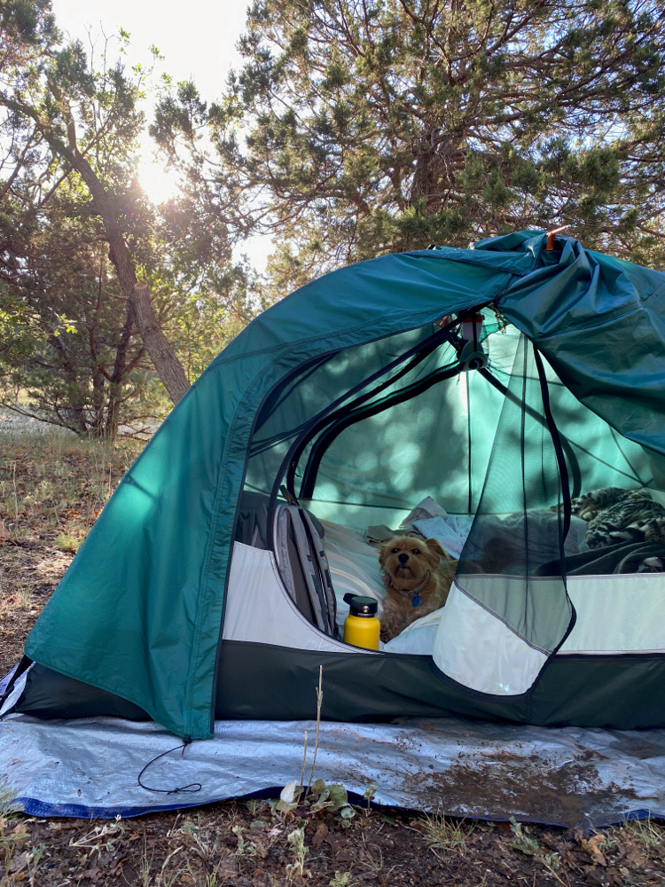
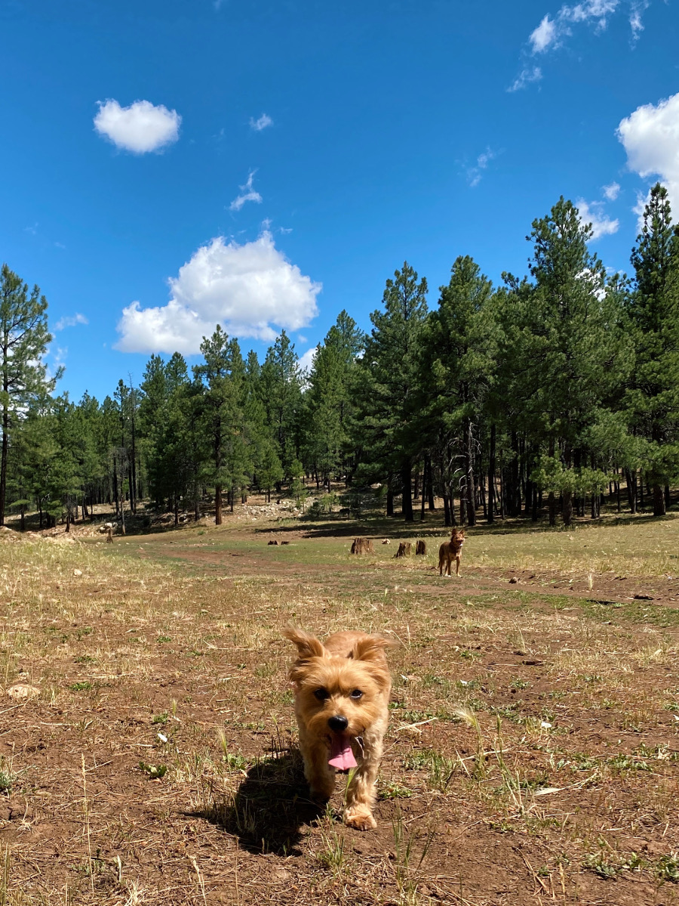
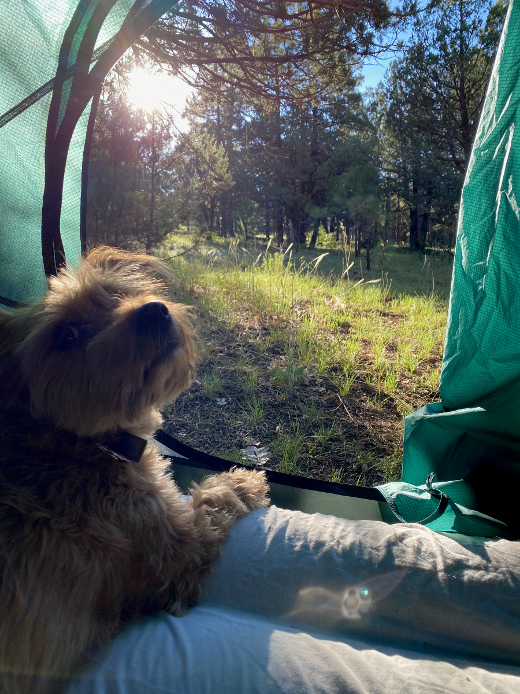
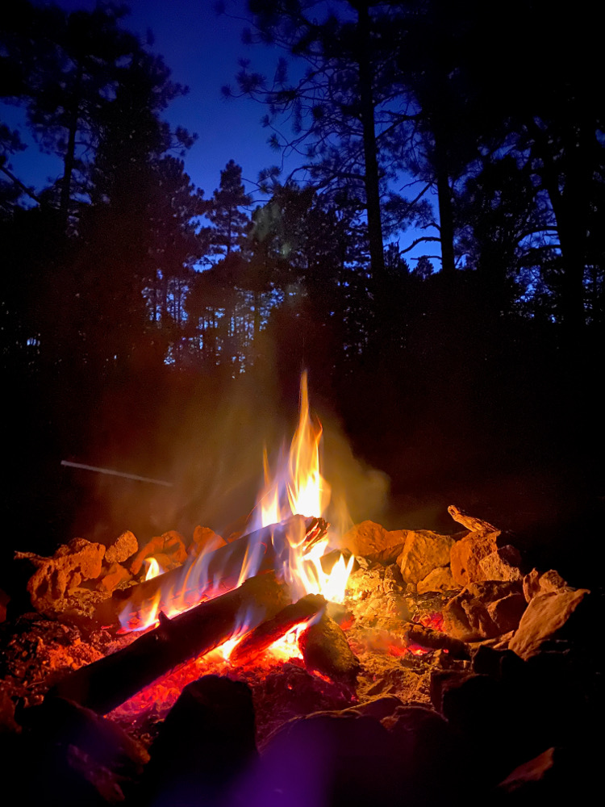

Last fall I moved to Phoenix, Arizona, and one of my favorite parts about living here is how easy it is to get out and enjoy nature! With a record-breaking 53 days above 110° this summer, as well as a global pandemic limiting which safe group activities I could do with my friends, I've been going camping pretty frequently. I hadn't really camped too often before living in Arizona, so I wanted to start a series rating the campsites I've camped at so far.
This was the first place I ever went camping around here. It's a sleepy location in the pine forest and was perfect for escaping the brutal Phoenix heat. While it would be a 115° in the city, up north the highs would be in the 80s with lows at night in the 50s. Spending a weekend hiking, eating, playing with the dogs, and sitting around a fire drinking beer with friends made for some great summer memories!
Location
Keeping with Leave No Trace's guidelines on location tagging, I will not be posting exact GPS coordinates.
Between Happy Jack and Highway 87 off of Fire Road 211.
Car Accessibility
Totally car accesible, the route from Phoenix is all highway and then a few miles of wide, smooth dirt roads and some cattle grates. However, on a Sunday it's necessary to leave by mid-morning if you don't want to double your commute time getting back into Phoenix.
Campsite Condition
This campsite is in amazing condition with no trash or toilet paper to clean up. The dirt roads are also well-maintained. Remember, if you go camping, leave it better than you found it :)
Hiking
No established trails nearby, but plenty of tiny dirt roads with just a little bit of ATV traffic that make for some easy and flat hikes.
Dog Info
The campsite was perfect for dogs! The terrain is pretty flat and it's easy to keep an eye on them. We didn't see any other wildlife (minus some random cows), but we were sometimes able to hear coyotes at night. The ground is mostly low grass with nothing sharp to poke their feet. However, one of the weekends we camped here, there were several cow patties that the dogs couldn't resist eating. (gross!)
We were lucky enough to camp one weekend when there wasn't a fire ban.
Questions? Comments? Don't hesitate to contact me!